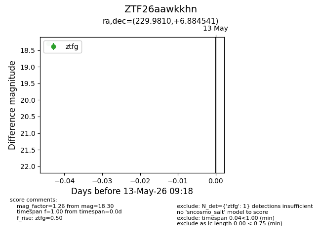
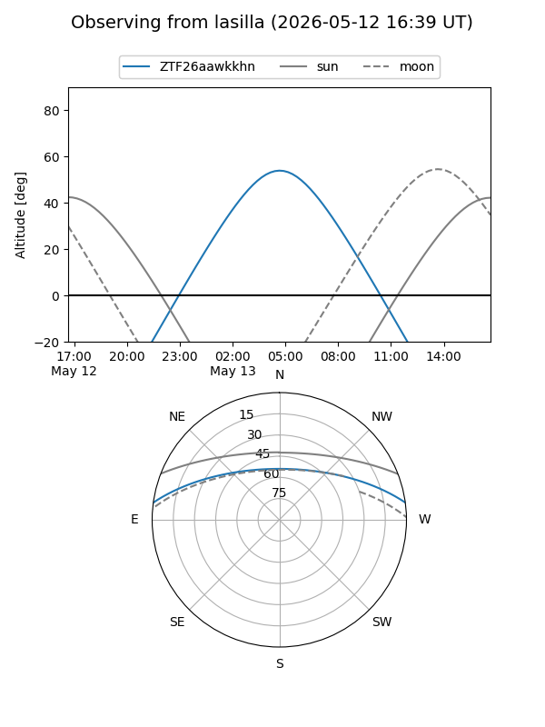
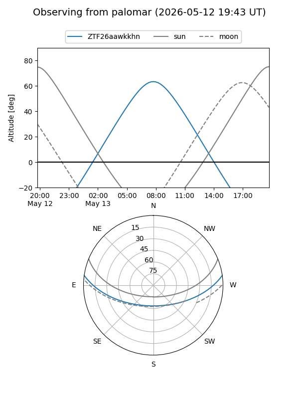

ZTF26aawkkhn
Target ZTF26aawkkhn at 2026-05-13 09:20
Aliases and brokers:
FINK: link
Lasair: link
ALeRCE: link
alt names
ZTF26aawkkhn (ztf,fink_ztf)
Coordinates:
equatorial (ra, dec) = 229.9810,+6.88454
equatorial (HMS+DMS) = 15:19:55.45,+06:53:04.35
galactic (l, b) = (9.9359,+49.39193)
Flags:
Photometry:
last ztfg=18.30
1 ztfg detections
Lightcurve

Visibility


Additional plots